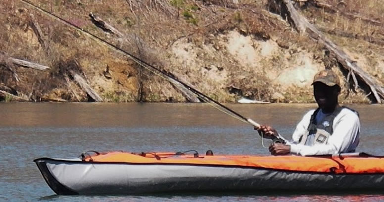

About Me
 After receiving my bachelor of science degree in computer science in 2006, I worked as an intern at
Goldfields Ghana Limited, Tarkwa Mine. I worked there for a few months after which I joined the Mineral Engineering Department at the
University of Mines and Technology, Tarkwa, Ghana as a National Service Person. There I developed software tools for comminution under the supervision of
Dr. Richard Amankwah.
In 2009, I joined Missouri University of Science and Technology (Missouri S&T) to pursue my Master of Science degree in Computer Science under the supervision of
Dr. Xiaoqing (Frank) Liu. During this time, I worked on security requirements analysis and specification on cloud and cyber-physical systems. After graduation, I worked as an Assistant Lecturer for the Computer Science and Engineering department at the Univesity of Mines and Technology for a year. I returned back to Missouri S&T in 2012 to work on my Ph.D. degree in computer science also under the supervision of
Dr. Xiaoqing (Frank) Liu. I am currently an Assistant Professor of Computer Science at University of Massachusetts Boston (UMass Boston). Prior to joining UMass Boston, I worked with Product Innovation and Engineering as a Software Engineer. There I developed part decomposition algorithms for the Siemens' NX software.
I love to fly fish and play soccer.
Education & Training
Ph.D. | 2015
Ph.D. in Computer Science
Missouri University of Science and Technology
M.S. | 2010
Master of Science in Computer Science
Missouri University of Science and Technology
B.S. | 2006
Bachelor of Science in Computer Science
Kwame Nkrumah University of Science and Technology
Research Interests
The main focus of my research is to develop methods and algorithms that incorporate users’ preferences for service selection and recommendation. Specifically, I am currently focusing on how to include user preferences on non-functional attributes (such as reliability, response time and availability) on machine learning algorithms for services/cloud services selection and recommendation.
I also have interest in additive manufacturing (3D printing) and its applications in the aerospace and automobile industry. I have recently started looking at additive manufacturing application in dentistry.
Honors, Awards & Grants
2017 - 2019
Additive Manufacturing Simulator (AMS), $100K, Sub-Contract, U.S. Department of Energy, 04/10/2017-04/09/2019.